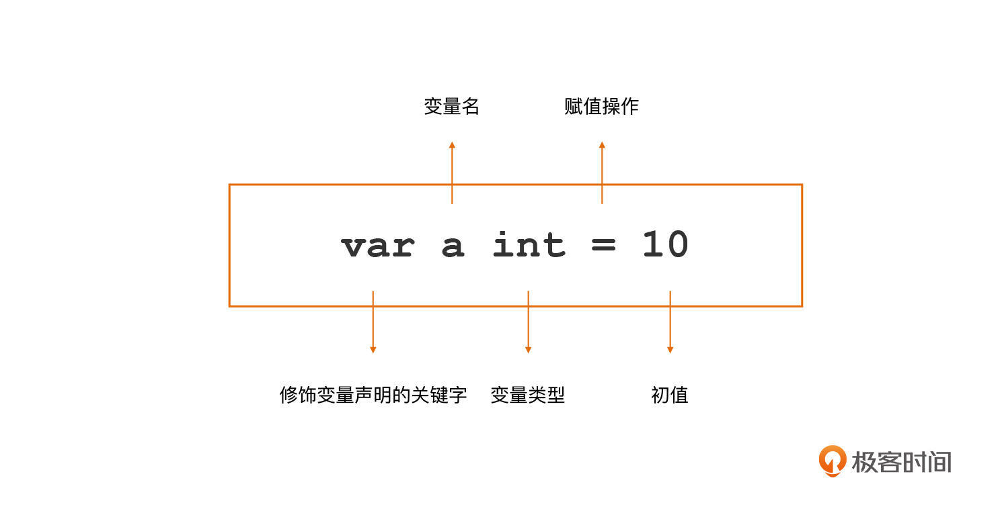
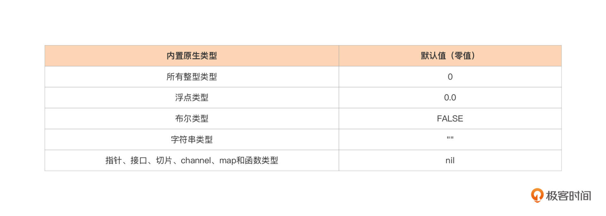
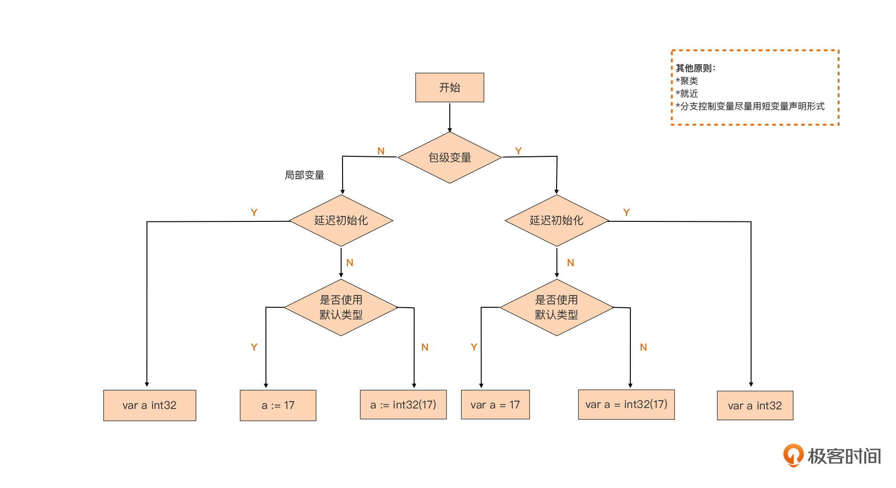

- 00 开篇词 这样入门Go，才能少走弯路.md.html
- 01 前世今生：你不得不了解的Go的历史和现状.md.html
- 02 拒绝“Hello and Bye”：Go语言的设计哲学是怎么一回事？.md.html
- 03 配好环境：选择一种最适合你的Go安装方法.md.html
- 04 初窥门径：一个Go程序的结构是怎样的？.md.html
- 05 标准先行：Go项目的布局标准是什么？.md.html
- 06 构建模式：Go是怎么解决包依赖管理问题的？.md.html
- 07 构建模式：Go Module的6类常规操作.md.html
- 08 入口函数与包初始化：搞清Go程序的执行次序.md.html
- 09 即学即练：构建一个Web服务就是这么简单.md.html
- 10 变量声明：静态语言有别于动态语言的重要特征.md.html
- 11 代码块与作用域：如何保证变量不会被遮蔽？.md.html
- 12 基本数据类型：Go原生支持的数值类型有哪些？.md.html
- 13 基本数据类型：为什么Go要原生支持字符串类型？.md.html
- 14 常量：Go在“常量”设计上的创新有哪些？.md.html
- 15 同构复合类型：从定长数组到变长切片.md.html
- 16 复合数据类型：原生map类型的实现机制是怎样的？.md.html
- 17 复合数据类型：用结构体建立对真实世界的抽象.md.html
- 18 控制结构：if的“快乐路径”原则.md.html
- 19 控制结构：Go的for循环，仅此一种.md.html
- 20 控制结构：Go中的switch语句有哪些变化？.md.html
- 21 函数：请叫我“一等公民”.md.html
- 22 函数：怎么结合多返回值进行错误处理？.md.html
- 23 函数：怎么让函数更简洁健壮？.md.html
- 24 方法：理解“方法”的本质.md.html
- 25 方法：方法集合与如何选择receiver类型？.md.html
- 26 方法：如何用类型嵌入模拟实现“继承”？.md.html
- 27 即学即练：跟踪函数调用链，理解代码更直观.md.html
- 28 接口：接口即契约.md.html
- 29 接口：为什么nil接口不等于nil？.md.html
- 30 接口：Go中最强大的魔法.md.html
- 31 并发：Go的并发方案实现方案是怎样的？.md.html
- 32 并发：聊聊Goroutine调度器的原理.md.html
- 33 并发：小channel中蕴含大智慧.md.html
- 34 并发：如何使用共享变量？.md.html
- 35 即学即练：如何实现一个轻量级线程池？.md.html
- 36 打稳根基：怎么实现一个TCP服务器？（上）.md.html
- 37 代码操练：怎么实现一个TCP服务器？（中）.md.html
- 38 成果优化：怎么实现一个TCP服务器？（下）.md.html
- 39 驯服泛型：了解类型参数.md.html
- 40 驯服泛型：定义泛型约束.md.html
- 41 驯服泛型：明确使用时机.md.html
- 元旦快乐 这是一份暂时停更的声明.md.html
- 加餐 作为Go Module的作者，你应该知道的几件事.md.html
- 加餐 如何拉取私有的Go Module？.md.html
- 加餐 我“私藏”的那些优质且权威的Go语言学习资料.md.html
- 加餐 聊聊Go 1.17版本的那些新特性.md.html
- 加餐 聊聊Go语言的指针.md.html
- 加餐 聊聊最近大热的Go泛型.md.html
- 大咖助阵 叶剑峰：Go语言中常用的那些代码优化点.md.html
- 大咖助阵 大明：Go泛型，泛了，但没有完全泛.md.html
- 大咖助阵 孔令飞：从小白到“老鸟”，我的Go语言进阶之路.md.html
- 大咖助阵 徐祥曦：从销售到分布式存储工程师，我与 Go 的故事.md.html
- 大咖助阵 曹春晖：聊聊 Go 语言的 GC 实现.md.html
- 大咖助阵 海纳：聊聊语言中的类型系统与泛型.md.html
- 期中测试 一起检验下你的学习成果吧.md.html
- 用户故事 罗杰：我的Go语言学习之路.md.html
- 结束语 和你一起迎接Go的黄金十年.md.html
- 结课测试 快来检验下你的学习成果吧！.md.html
- 捐赠
10 变量声明：静态语言有别于动态语言的重要特征
你好，我是Tony Bai。
今天我们将深入Go语法细节，学习静态语言有别于动态语言的一个重要特征：变量声明。那么变量声明究竟解决的是什么问题呢？我们先从变量这个概念说起。
在编程语言中，为了方便操作内存特定位置的数据，我们用一个特定的名字与位于特定位置的内存块绑定在一起，这个名字被称为变量。
但这并不代表我们可以通过变量随意引用或修改内存，变量所绑定的内存区域是要有一个明确的边界的。也就是说，通过这样一个变量，我们究竟可以操作4个字节内存还是8个字节内存，又或是256个字节内存，编程语言的编译器或解释器需要明确地知道。
那么，编程语言的编译器或解释器是如何知道一个变量所能引用的内存区域边界呢？
其实，动态语言和静态语言有不同的处理方式。动态语言（比如Python、Ruby等）的解释器可以在运行时通过对变量赋值的分析，自动确定变量的边界。并且在动态语言中，一个变量可以在运行时被赋予大小不同的边界。
而静态编程语言在这方面的“体验略差”。静态类型语言编译器必须明确知道一个变量的边界才允许使用这个变量，但静态语言编译器又没能力自动提供这个信息，这个边界信息必须由这门语言的使用者提供，于是就有了“变量声明”。通过变量声明，语言使用者可以显式告知编译器一个变量的边界信息。在具体实现层面呢，这个边界信息由变量的类型属性赋予。
作为身处静态编程语言阵营的Go语言，它沿袭了静态语言的这一要求：使用变量之前需要先进行变量声明。
首先，让我们先来看看Go语言的变量声明方法。
Go语言的变量声明方法
我们前面说过，Go是静态语言，所有变量在使用前必须先进行声明。声明的意义在于告诉编译器该变量可以操作的内存的边界信息，而这种边界通常又是由变量的类型信息提供的。
在Go语言中，有一个通用的变量声明方法是这样的：

这个变量声明分为四个部分：
- var是修饰变量声明的关键字；
- a为变量名；
- int为该变量的类型；
- 10是变量的初值。
你看啊，其实Go语言的变量声明形式与其他主流静态语言有一个显著的差异，那就是它将变量名放在了类型的前面。这样做有什么好处呢？我先不说，我想请你思考一下。这个类型为变量提供了边界信息，在Go语言中，无论什么类型的变量，都可以使用这种形式进行变量声明。
但是，如果你没有显式为变量赋予初值，Go编译器会为变量赋予这个类型的零值：
var a int // a的初值为int类型的零值：0
什么是类型的零值呢？Go语言的每种原生类型都有它的默认值（这些原生类型我们后面再讲），这个默认值就是这个类型的零值。这里我给你写了Go规范定义的内置原生类型的默认值（即零值）：

另外，像数组、结构体这样复合类型变量的零值就是它们组成元素都为零值时的结果。
除了单独声明每个变量外，Go语言还提供了变量声明块（block）的语法形式，可以用一个var关键字将多个变量声明放在一起，像下面代码这样：
var (
a int = 128
b int8 = 6
s string = "hello"
c rune = 'A'
t bool = true
)
你看在这个变量声明块中，我们通过一个var关键字声明了5个不同类型的变量。而且，Go语言还支持在一行变量声明中同时声明多个变量：
var a, b, c int = 5, 6, 7
这样的多变量声明同样也可以用在变量声明块中，像下面这样：
var (
a, b, c int = 5, 6, 7
c, d, e rune = 'C', 'D', 'E'
)
当然了，虽然我们现在写的多变量声明都是在声明同一类型的变量，但是它也适用于声明不同类型的变量，这个我们等会儿会详细讲讲。
除了上面这种通用的变量声明形式，为了给开发者带来更好的使用体验，Go语言还提供了两种变量声明的“语法糖”，下面我们逐一来学习一下。
1. 省略类型信息的声明：
在通用的变量声明的基础上，Go编译器允许我们省略变量声明中的类型信息，它的标准范式是“var varName = initExpression”，比如下面就是一个省略了类型信息的变量声明：
var b = 13
那么Go编译器在遇到这样的变量声明后是如何确定变量的类型信息呢？
其实很简单，Go编译器会根据右侧变量初值自动推导出变量的类型，并给这个变量赋予初值所对应的默认类型。比如，整型值的默认类型int，浮点值的默认类型为float64，复数值的默认类型为complex128。其他类型值的默认类型就更好分辨了，在Go语言中仅有唯一与之对应的类型，比如布尔值的默认类型只能是bool，字符值默认类型只能是rune，字符串值的默认类型只能是string等。
如果我们不接受默认类型，而是要显式地为变量指定类型，除了通用的声明形式，我们还可以通过显式类型转型达到我们的目的：
var b = int32(13)
显然这种省略类型信息声明的“语法糖”仅适用于在变量声明的同时显式赋予变量初值的情况，下面这种没有初值的声明形式是不被允许的：
var b
结合多变量声明，我们可以使用这种变量声明“语法糖”声明多个不同类型的变量：
var a, b, c = 12, 'A', "hello"
在这个变量声明中，我们声明了三个变量a、b和c，但它们分别具有不同的类型，分别为int、rune和string。
在这种变量声明语法糖中，我们省去了变量类型信息，但Go编译器会为我们自动推导出类型信息。那是否还有更简化的变量声明形式呢？答案是有的。下面我们就来看看短变量声明。
2. 短变量声明：
其实，Go语言还为我们提供了最简化的变量声明形式：短变量声明。使用短变量声明时，我们甚至可以省去var关键字以及类型信息，它的标准范式是“varName := initExpression”。我这里也举了几个例子：
a := 12
b := 'A'
c := "hello"
这里我们看到，短变量声明将通用变量声明中的四个部分省去了两个，但它并没有使用赋值操作符“=”，而是使用了短变量声明专用的“:=”。这个原理和上一种省略类型信息的声明语法糖一样，短变量声明中的变量类型也是由Go编译器自动推导出来的。
而且，短变量声明也支持一次声明多个变量，而且形式更为简洁，是这个样子的：
a, b, c := 12, 'A', "hello"
不过呢，短变量声明的使用也是有约束的，并不是所有变量都能用短变量声明来声明的，这个你会在下面的讲解中了解到。
好了，现在我们已经学习了至少三种变量声明形式了。这时候你可能有些犯迷糊了：这些变量声明形式是否适合所有变量呢？我到底该使用哪一种呢？别急，在揭晓答案之前，我们需要学习点预备知识：Go语言的两类变量。
通常来说，Go语言的变量可以分为两类：一类称为包级变量(package varible)，也就是在包级别可见的变量。如果是导出变量（大写字母开头），那么这个包级变量也可以被视为全局变量；另一类则是局部变量(local varible)，也就是Go函数或方法体内声明的变量，仅在函数或方法体内可见。而我们声明的所有变量都逃不开这两种。
有了这个预备知识，接下来我们就来分别说明一下这两类变量在声明形式选择上的方法，以及一些最佳实践。
包级变量的声明形式
首先，我先下个结论：包级变量只能使用带有var关键字的变量声明形式，不能使用短变量声明形式，但在形式细节上可以有一定灵活度。具体这个灵活度怎么去考虑呢？我们可以从“变量声明时是否延迟初始化”这个角度，对包级变量的声明形式进行一次分类。
第一类：声明并同时显式初始化。
你先看看这个代码：
// $GOROOT/src/io/io.go
var ErrShortWrite = errors.New("short write")
var ErrShortBuffer = errors.New("short buffer")
var EOF = errors.New("EOF")
我们可以看到，这个代码块里声明的变量都是io包的包级变量。在Go标准库中，对于变量声明的同时进行显式初始化的这类包级变量，实践中多使用这种省略类型信息的“语法糖”格式：
var varName = initExpression
就像我们前面说过的那样，Go编译器会自动根据等号右侧InitExpression结果值的类型，来确定左侧声明的变量的类型，这个类型会是结果值对应类型的默认类型。
当然，如果我们不接受默认类型，而是要显式地为包级变量指定类型，那么我们有两种方式，我这里给出了两种包级变量的声明形式的对比示例。
//第一种：
plain
var a = 13 // 使用默认类型
var b int32 = 17 // 显式指定类型
var f float32 = 3.14 // 显式指定类型
//第二种：
var a = 13 // 使用默认类型
var b = int32(17) // 显式指定类型
var f = float32(3.14) // 显式指定类型
虽然这两种方式都是可以使用的，但从声明一致性的角度出发，Go更推荐我们使用后者，这样能统一接受默认类型和显式指定类型这两种声明形式，尤其是在将这些变量放在一个var块中声明时，你会更明显地看到这一点。
所以我们更青睐下面这样的形式：
var (
a = 13
b = int32(17)
f = float32(3.14)
)
而不是下面这种看起来不一致的声明形式：
var (
a = 13
b int32 = 17
f float32 = 3.14
)
第二类：声明但延迟初始化。
对于声明时并不立即显式初始化的包级变量，我们可以使用下面这种通用变量声明形式：
var a int32
var f float64
我们知道，虽然没有显式初始化，Go语言也会让这些变量拥有初始的“零值”。如果是自定义的类型，我也建议你尽量保证它的零值是可用的。
这里还有一个注意事项，就是声明聚类与就近原则。
正好，Go语言提供了变量声明块用来把多个的变量声明放在一起，并且在语法上也不会限制放置在var块中的声明类型，那我们就应该学会充分利用var变量声明块，让我们变量声明更规整，更具可读性，现在我们就来试试看。
通常，我们会将同一类的变量声明放在一个var变量声明块中，不同类的声明放在不同的var声明块中，比如下面就是我从标准库net包中摘取的两段变量声明代码：
// $GOROOT/src/net/net.go
var (
netGo bool
netCgo bool
)
var (
aLongTimeAgo = time.Unix(1, 0)
noDeadline = time.Time{}
noCancel = (chan struct{})(nil)
)
我们可以看到，上面这两个var声明块各自声明了一类特定用途的包级变量。那我就要问了，你还能从中看出什么包级变量声明的原则吗？
其实，我们可以将延迟初始化的变量声明放在一个var声明块(比如上面的第一个var声明块)，然后将声明且显式初始化的变量放在另一个var块中（比如上面的第二个var声明块），这里我称这种方式为“声明聚类”，声明聚类可以提升代码可读性。
到这里，你可能还会有一个问题：我们是否应该将包级变量的声明全部集中放在源文件头部呢？答案不能一概而论。
使用静态编程语言的开发人员都知道，变量声明最佳实践中还有一条：就近原则。也就是说我们尽可能在靠近第一次使用变量的位置声明这个变量。就近原则实际上也是对变量的作用域最小化的一种实现手段。在Go标准库中我们也很容易找到符合就近原则的变量声明的例子，比如下面这段标准库http包中的代码就是这样：
// $GOROOT/src/net/http/request.go
var ErrNoCookie = errors.New("http: named cookie not present")
func (r *Request) Cookie(name string) (*Cookie, error) {
for _, c := range readCookies(r.Header, name) {
return c, nil
}
return nil, ErrNoCookie
}
在这个代码块里，ErrNoCookie这个变量在整个包中仅仅被用在了Cookie方法中，因此它被声明在紧邻Cookie方法定义的地方。当然了，如果一个包级变量在包内部被多处使用，那么这个变量还是放在源文件头部声明比较适合的。
接下来，我们再来看看另外一种变量：局部变量的声明形式。
局部变量的声明形式
有了包级变量做铺垫，我们再来讲解局部变量就容易很多了。和包级变量相比，局部变量又多了一种短变量声明形式，这是局部变量特有的一种变量声明形式，也是局部变量采用最多的一种声明形式。
这里我们也从“变量声明的时候是否延迟初始化”这个角度，对本地变量的声明形式进行分类说明。
第一类：对于延迟初始化的局部变量声明，我们采用通用的变量声明形式
其实，我们之前讲过的省略类型信息的声明和短变量声明这两种“语法糖”变量声明形式都不支持变量的延迟初始化，因此对于这类局部变量，和包级变量一样，我们只能采用通用的变量声明形式：
var err error
第二类：对于声明且显式初始化的局部变量，建议使用短变量声明形式
短变量声明形式是局部变量最常用的声明形式，它遍布在Go标准库代码中。对于接受默认类型的变量，我们使用下面这种形式：
a := 17
f := 3.14
s := "hello, gopher!"
对于不接受默认类型的变量，我们依然可以使用短变量声明形式，只是在”:=“右侧要做一个显式转型，以保持声明的一致性：
a := int32(17)
f := float32(3.14)
s := []byte("hello, gopher!")
这里我们还要注意：尽量在分支控制时使用短变量声明形式。
分支控制应该是Go中短变量声明形式应用得最广泛的场景了。在编写Go代码时，我们很少单独声明用于分支控制语句中的变量，而是将它与if、for等控制语句通过短变量声明形式融合在一起，即在控制语句中直接声明用于控制语句代码块中的变量。
你看一下下面这个我摘自Go标准库中的代码，strings包的LastIndexAny方法为我们很好地诠释了如何将短变量声明形式与分支控制语句融合在一起使用：
// $GOROOT/src/strings/strings.go
func LastIndexAny(s, chars string) int {
if chars == "" {
// Avoid scanning all of s.
return -1
}
if len(s) > 8 {
// 作者注：在if条件控制语句中使用短变量声明形式声明了if代码块中要使用的变量as和isASCII
if as, isASCII := makeASCIISet(chars); isASCII {
for i := len(s) - 1; i >= 0; i-- {
if as.contains(s[i]) {
return i
}
}
return -1
}
}
for i := len(s); i > 0; {
// 作者注：在for循环控制语句中使用短变量声明形式声明了for代码块中要使用的变量c
r, size := utf8.DecodeLastRuneInString(s[:i])
i -= size
for _, c := range chars {
if r == c {
return i
}
}
}
return -1
}
而且，短变量声明的这种融合的使用方式也体现出“就近”原则，让变量的作用域最小化。
另外，虽然良好的函数/方法设计都讲究“单一职责”，所以每个函数/方法规模都不大，很少需要应用var块来聚类声明局部变量，但是如果你在声明局部变量时遇到了适合聚类的应用场景，你也应该毫不犹豫地使用var声明块来声明多于一个的局部变量，具体写法你可以参考Go标准库net包中resolveAddrList方法：
// $GOROOT/src/net/dial.go
func (r *Resolver) resolveAddrList(ctx context.Context, op, network,
addr string, hint Addr) (addrList, error) {
... ...
var (
tcp *TCPAddr
udp *UDPAddr
ip *IPAddr
wildcard bool
)
... ...
}
小结
好了，今天的课讲到这里就结束了，现在我们一起来回顾一下吧。
在这一讲中，我们学习了多种Go变量声明的方法，还学习了不同类型Go变量可以采用的变量声明形式和惯用法，以及一些变量声明的最佳实践原则。
具体来说，Go语言提供了一种通用变量声明形式以及两种变量声明“语法糖”形式，而且Go包级变量和局部变量会根据具体情况选择不同的变量声明形式，这里我们用一幅图来做个形象化的小结：- - 你可以看到，良好的变量声明实践需要我们考虑多方面因素，包括明确要声明的变量是包级变量还是局部变量、是否要延迟初始化、是否接受默认类型、是否是分支控制变量并结合聚类和就近原则等。
说起来，Go语言崇尚“做一件事只用一种方法”，但变量声明却似乎是一个例外。如果让Go语言的设计者重新来设计一次变量声明语法，我觉得他们很大可能不会给予开发们这么大的变量声明灵活性。作为开发者，我们要注意的是，在统一项目范围内，我们选择的变量声明的形式应该是一致的。
思考题
今天，我们的思考题是：与主流静态语言不同，在Go语言变量声明中，类型是放在变量名的后面的，你认为这样做有什么好处？欢迎在留言区给我留言。
感谢你和我一起学习，也欢迎你把这节课分享给更多对Go语言的类型声明感兴趣的朋友。我是Tony Bai，我们下节课见。
© 2019 - 2023 Liangliang Lee. Powered by gin and hexo-theme-book.